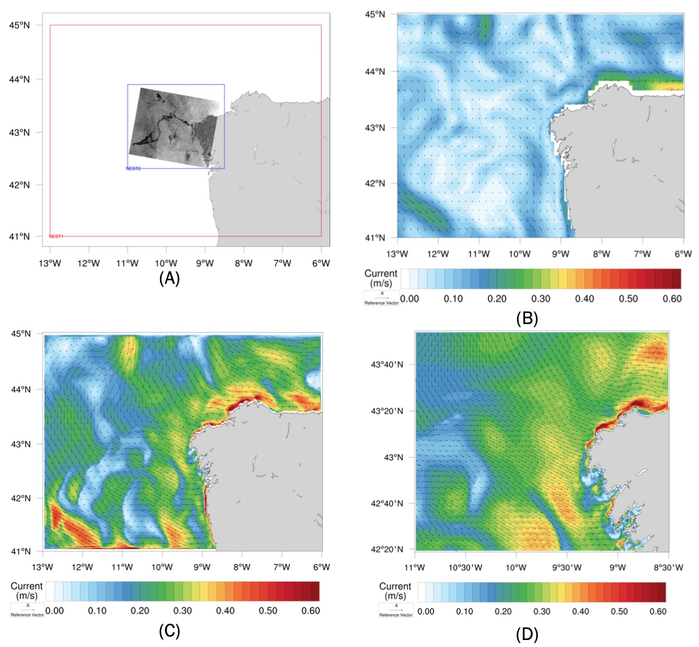

Oil-spills transport by submesoscale flows in the open ocean
Context and Issue at stake
Oil spills in marine environments can have widespread impact, long-term consequences on wildlife, fisheries and coastal habitats. We will investigate the impact of fine scale oceanic motions known as ‘submesoscales’ on the drift of the oil. We will test whether explicitly representing submesoscale flows allows to more accurately predict the pollutant advection-diffusion and, therefore, their impacts on the coastal environment.
 Model domains with details of the surface circulation. (Fig. A) Boundaries of the two consecutive nested domains with increasing grid resolutions of ~ 2000m (red rectangle) and ~ 500m (blue rectangle). Overplotted the ASAR-ENVISAT ESA Satellite image acquired on November 17, 2002 showing the wake of the fuel oil of the Prestige accident. Daily mean surface velocity field on November 13, 2002 of the CMEMS-IBI Ocean Reanalysis system at 1/12° (Fig. B) Nest1 model at 1/48°(Fig. C) and Nest2 model at 1/192° (Fig. D).
Description of modelling tools
The SURF platform (https://www.surf-platform.org), based on the NEMO code, will be used to downscale from the parent course resolution model to very high-resolution submesoscale permitting model. We will use as First Parent Model the CMEMS IBI (Iberian Biscay Irish) Ocean Reanalysis System (IBI_REANALYSIS_PHYS_005_002 product). The oil spill model code MEDSLIK-II , forced by wind and ocean current, will be used then to simulate and predict the transport and weathering of an oil spill and to evaluate the impact of the new fine-scale ocean motion on the oil spill advection-diffusion.
Details of what will be tested
This case study will investigate the impact of submesoscale processes on the oil transport using velocity fields from very high-resolution submesoscale-permitting model. We will assess the oil spill simulation comparing our results with the Prestige oil spill accident occurred 100km off the coast of Galicia, Spain, on November 13, 2002. We will compare our results using the current and new version of NEMO code from WP2.
Team members
The ‘Pollution Transport by Sub-mesoscale flows in the Open Ocean case study’ will be carried out by Francesco Trotta and Nadia Pinardi at the University of Bologna. Francesco is a junior Assistant professor (RTD-A) at the Department of Physics and Astronomy of the University of Bologna. He works in the field of oceanography and conducts his research on high-resolution ocean modelling. His main research interests are focused on ocean dynamics and especially the understanding of submesoscale processes (1-10km) in the ocean. Nadia is full professor of Oceanography at Bologna University, Italy. Her interests range from ocean numerical modelling and predictions to data assimilation, numerical modelling of the marine physical-biological interactions and pollutants at sea, coastal forecasting and coupling with hydrology. She is, since 2019, vice-president of the Infrastructure Commission of the World Meteorological Organization. She has been awarded in 2015 the Italian Republic Honors “Commendatore dell’ Ordine al merito della Repubblica italiana” and in 2017 the Laurea Honoris Causa for Operational Oceanography at the University of Liege, Belgium.